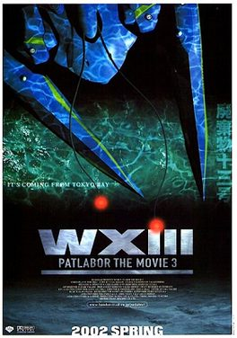

WXIII: Patlabor The Movie 3



Director: Fumihiko Takayama
Distributor: Madman Entertainment
Classification: M15+
Running Time: 105 Minutes.
Whenever I watch Japanese animation, I’m always struck by a fundamental difference in the way their culture structures their narratives, compared with the way it is done for Western audiences. Things aren’t really any different with WXIII: Patlabor The Movie 3, an obscure title on release from Madman Entertainment. A sequel to an established series to begin with, anyone with an Australian upbringing will be hard pressed to understand what the hell is going on. But none of this really matters; what’s really important is that the viewer is given the opportunity to experience some crazy Japanese action involving some big destructive robots, right? But unfortunately, WXIII: Patlabor The Movie 3 doesn’t really deliver on this level either.
While no one would be surprised if you had never heard of the Patlabor animated series, it’s actually been popular in Japan since 1988. WXIII: Patlabor The Movie 3 is set in the near future, in a Tokyo where giant mechanical creatures known as ‘labors’ have been created to assist with massive-scale construction. After these labors were acquired by terrorist organisations to achieve less than desirable goals, the police developed the ‘PatLabor’ units to help assist with crime control. While all this may sound a little complicated, it’s basically another excuse for Japan to continue their ongoing obsession with huge robots that smash the hell out of stuff.
When a number of number of vicious and unexplained attacks are made on ships moored just outside Tokyo Bay, police detectives Kusumi and Hata are brought in to investigate the circumstances. While they are initially stumped as to who or what is responsible for the attacks, slowly they uncover a government conspiracy that leads straight to WXIII: Wasted Thirteen, a vicious and giant biological beast. Rising to the challenge, the Patlabor Special Unit strap on their giant suits for a final showdown with the WXIII beast. Or at least, that was what little I could gather from the plot.
WXIII: Patlabor The Movie 3 features some memorable scenes as it moves through the streets of neo-Tokyo, building an ethereal atmosphere that is heightened by an effective soundtrack reminiscent of Vangelis’s work on Bladerunner. But for the most part WXIII: Patlabor is, quite frankly, boring. And things aren’t helped much by the fact that for the first half hour, nothing much really happens at all. Things heat up a little when the giant WXIII monster appears and starts violently devouring people, a murderous creature whose genesis has something to do with the manipulation of cancerous cells. Or something.
While my knowledge of Japanese manga isn’t exactly above reproach, I’ve enjoyed watching quite a few animated classics over the years. But unfortunately, WXIII: Patlabor didn’t exactly grab me. Call me an ignoramus when it comes to the subtleties of Japanese culture, but what has happened to all the horrendous violence? Where has the gratuitous nudity gone, and all of the demons doing the morally questionable things that I have come to expect from Tokyo animation? Japan, you’ve let me down. Fans of traditional Japanese mech-action will no doubt find something to enjoy, but the title is just too obscure to hold any appeal for anyone else.
Patlabor is a series well known for its intellectual complexity, so there is obviously something being lost in translation. But for a dumb Westerner such as myself, the film is barely redeemed by the crazy robot action that takes place in the narrative’s last half hour. Fans of Japanese anime should check it out themselves and make up their own minds as to whether it’s any good or not, as should those already familiar with the series. But for everyone else, WXIII: Patlabor The Movie 3 doesn’t possess the wide appeal of other sci-fi classics like Ghost in the Shell, Akira and the like, and should be given a wide berth.
Rating: 2 out of 5